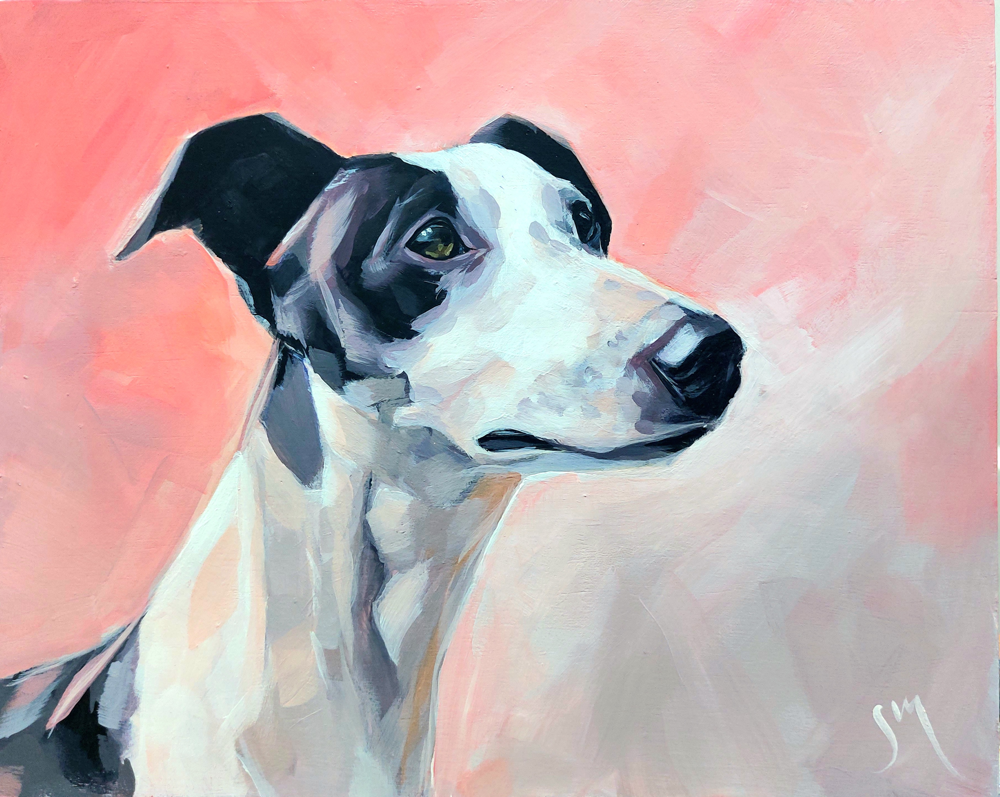
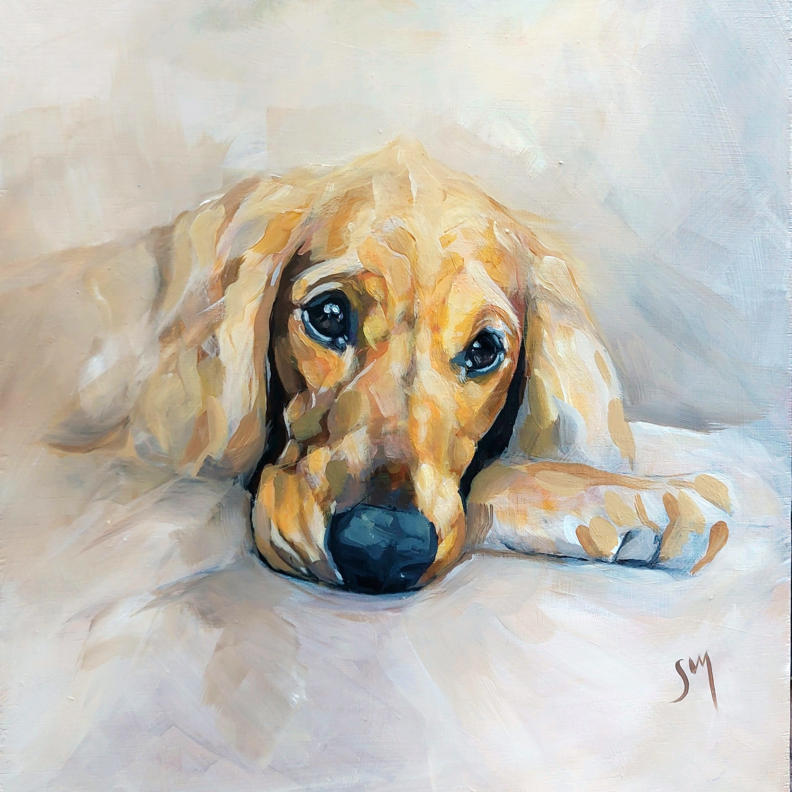
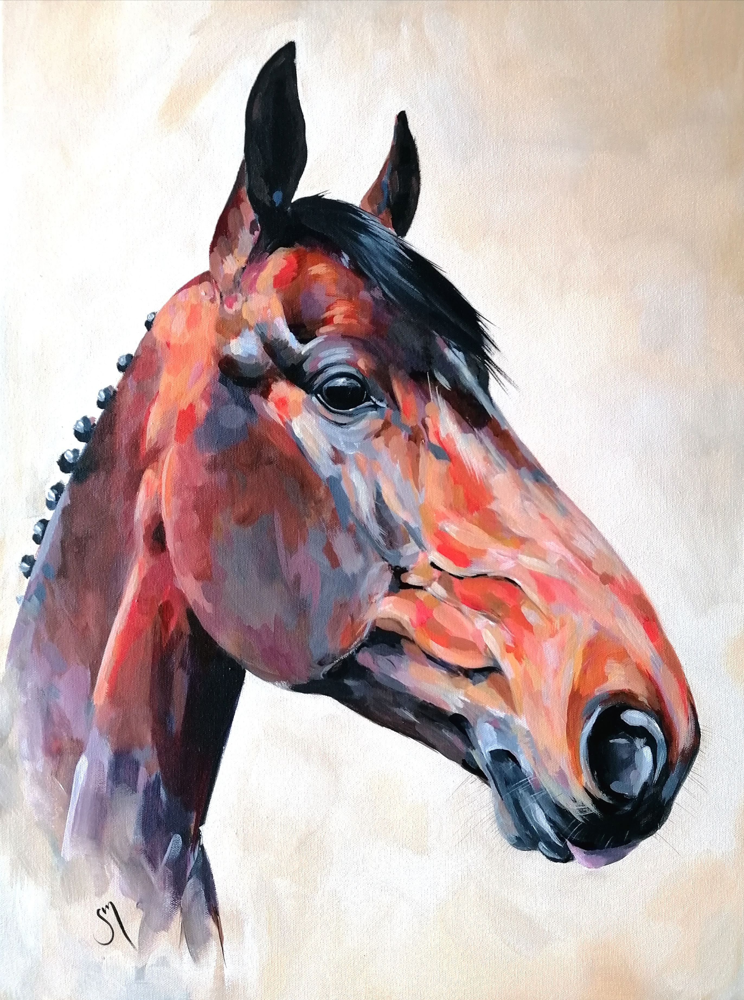
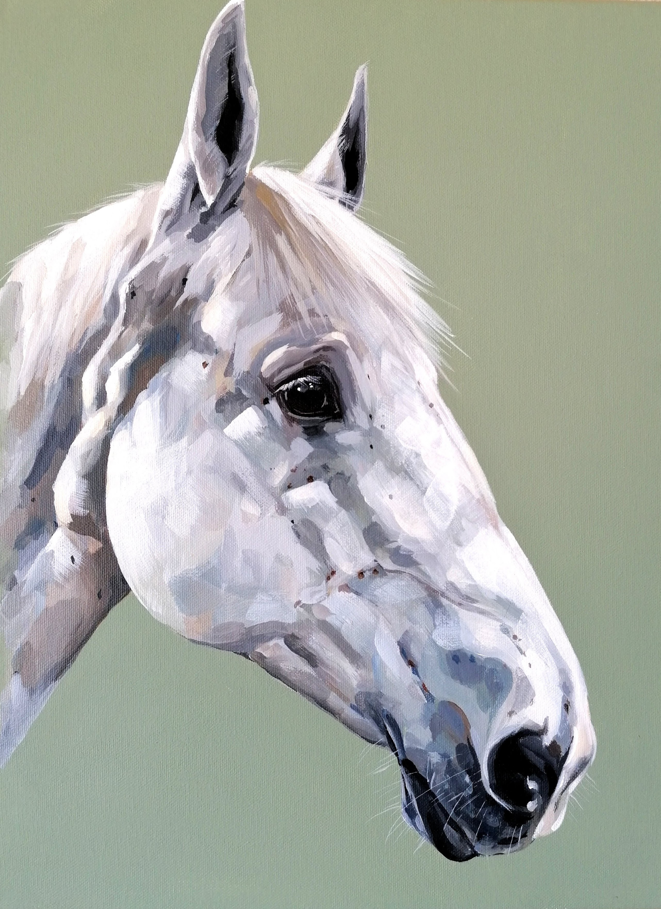
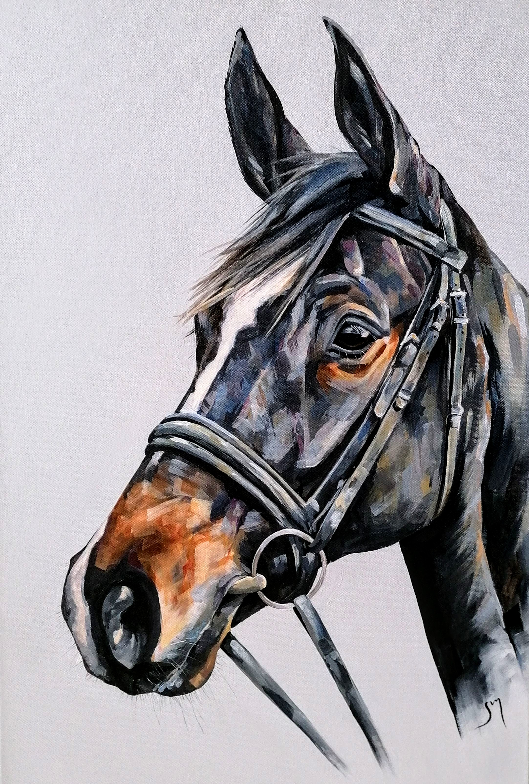
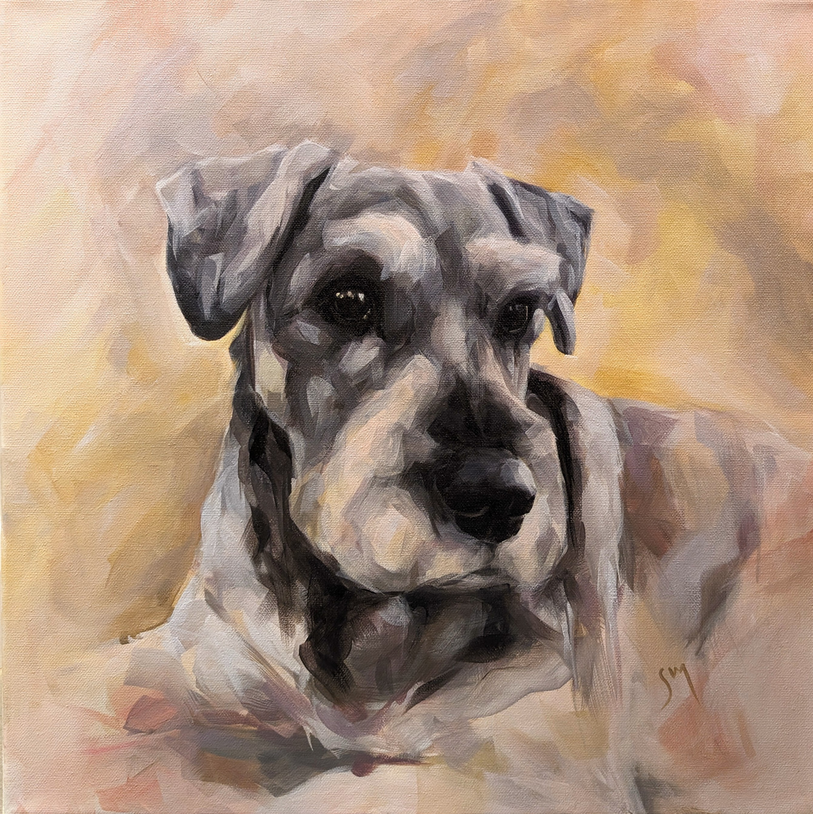
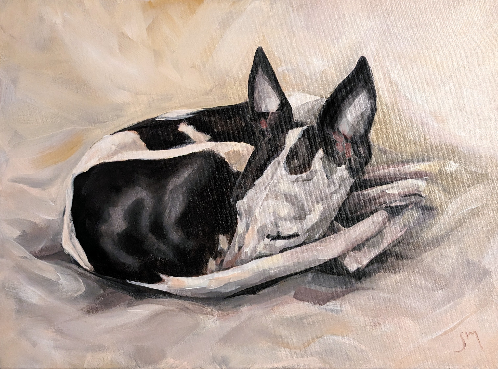
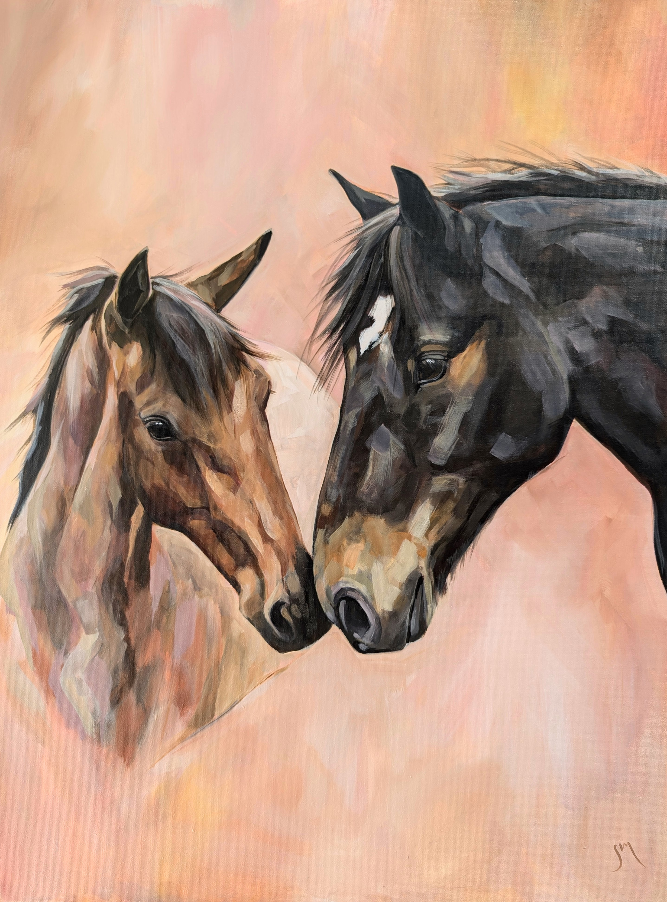

Portfolio

Staffordshire Bull Terrier
Cocker Spaniel

Whippet Portrait

Whippet & Greyhound

Show Cocker Spaniel

Chestnut Horse
Bay Pony

Colourful Bay Horse

Grey Horse

Dark Bay Horse

Standard Schnauzer

Sleeping Whippet

Black Cocker Spaniel

The Pair